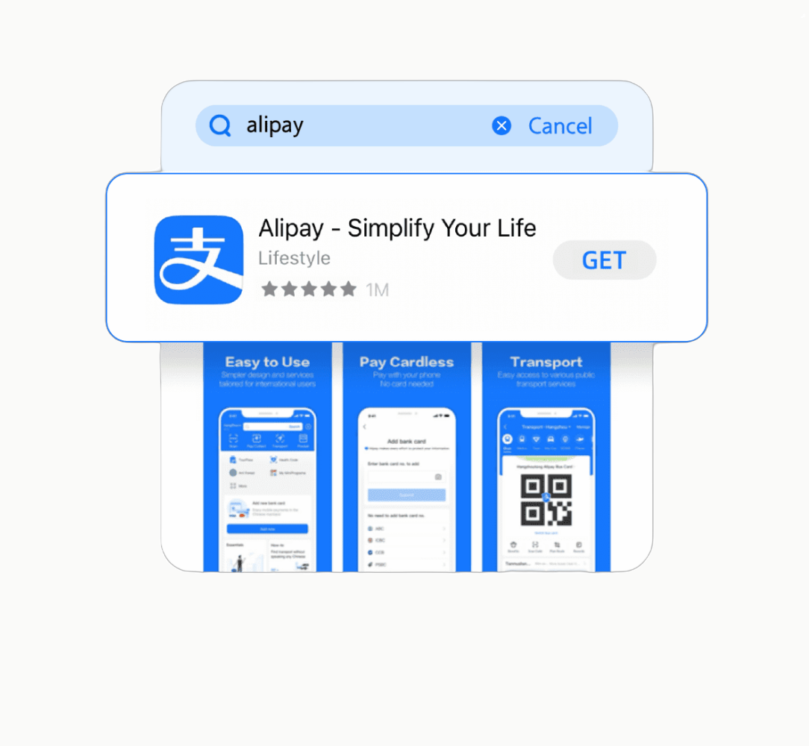
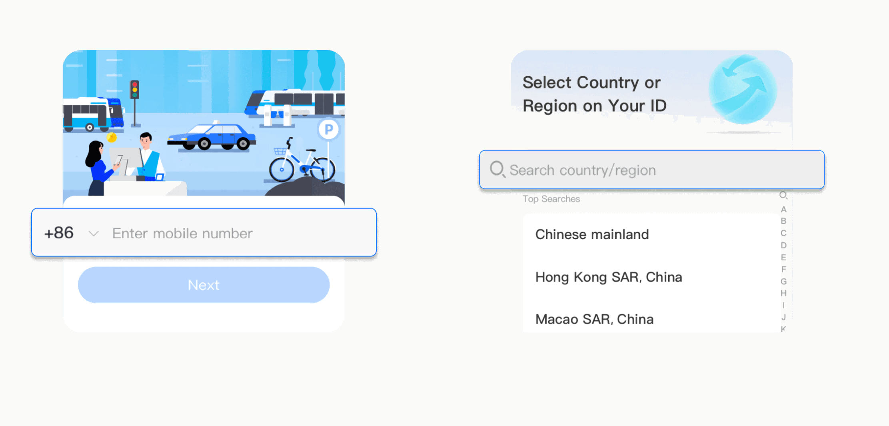
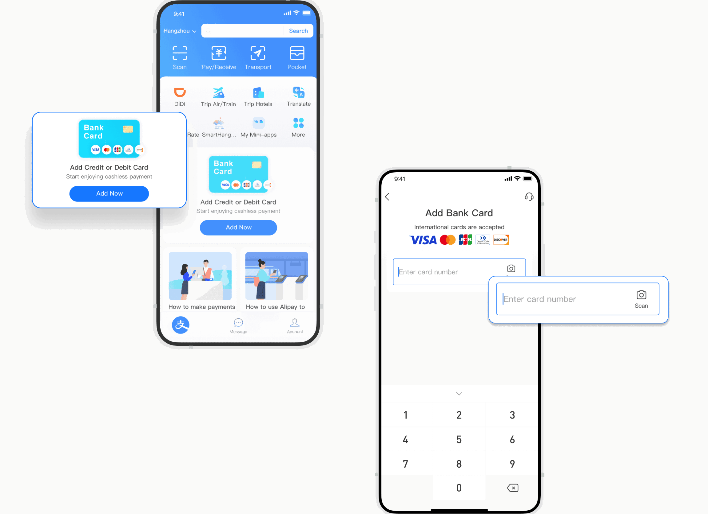
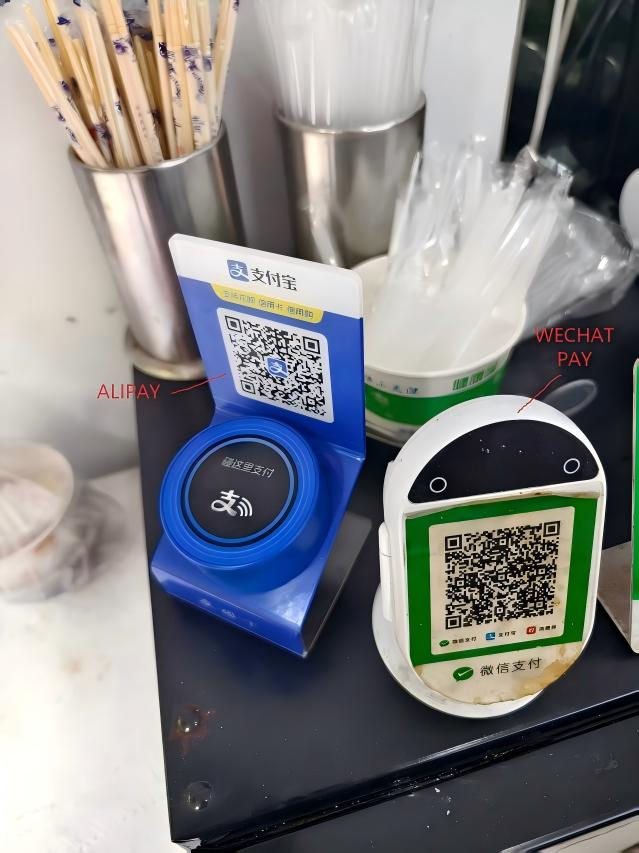
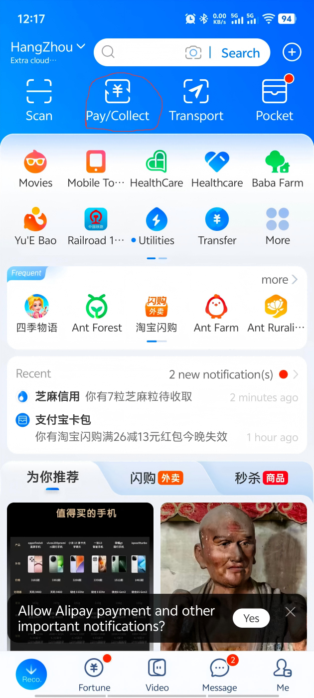
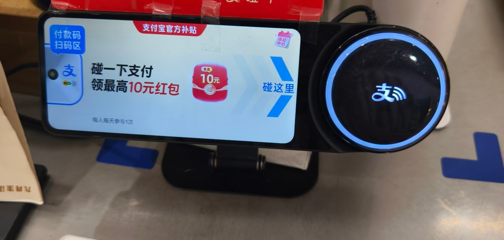
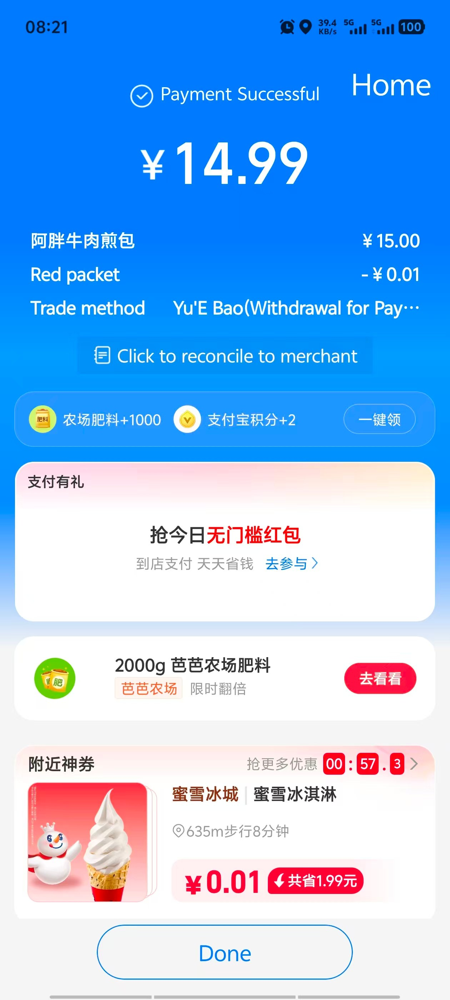

How to Use Alipay in China
(With a Foreign Card)
TL;DR — The Short Version
- Download Alipay before you fly (it's on the iOS App Store and Google Play)
- Sign up with your foreign phone number — it works
- Add your Visa or Mastercard in the app — Amex works but has more rejections, so use Visa/MC as your primary (Settings → Payment → Add Card)
- Verify your identity with your passport (takes 5 minutes in-app)
- That's it. You can now pay at the vast majority of shops, restaurants, and street vendors in China
Why This Matters
I've lived in China for years. I can count on one hand the number of times I've used cash in the last six months — and every single time, it was more trouble than it was worth.
Now, legally: no business in China is allowed to refuse cash. It's written into law. But here's the reality — I once tried to pay with a ¥100 bill at a bubble tea shop in Hangzhou. The cashier opened the register drawer, stared at it for a few seconds, then turned to her coworker and asked if anyone had change. They didn't. After an awkward minute, I just paid with Alipay. Everyone uses their phone because it's fast, not because cash is banned. The problem is, when nobody uses cash, nobody keeps change.
But if you're visiting? You don't need a Chinese bank account. You don't need to speak Chinese. Alipay works with foreign Visa and Mastercard — and the setup takes about 10 minutes. Here's exactly how.
Before You Leave Home
Do these things on your phone before you get on the plane. I've seen this happen too many times: a traveler lands at Shanghai Pudong, opens their phone to download Alipay — and the airport WiFi demands a Chinese phone number to connect. They end up sitting on their suitcase outside the arrival gate, hotspotting off a friend's phone, burning through roaming data to download a 200 MB app. Don't be that person.
1 Download Alipay
Get it from your phone's official app store — iOS App Store or Google Play. The app is called "Alipay" and the developer is "Alipay (Hangzhou) Technology Co., Ltd." Don't download APK files from random websites.

Or Scan the QR Code to Download
If you're reading this on your computer and want to install Alipay on your phone right now — just scan this QR code with your phone's camera. It'll take you straight to the correct app store page. Reading on your phone? Save the QR code to your photo album, then open it with your phone's built-in camera or QR scanner — your phone will recognize the app store link automatically.
2 Sign Up With Your Foreign Phone Number
Open the app and tap "Sign Up." Enter your regular phone number — the one you use at home. Alipay accepts numbers from virtually every country. You'll receive an SMS verification code. Enter it, and you're in.

3 Add Your Foreign Card
Once you're in the app:
- Tap "Me" (bottom-right icon of a person)
- Tap "Bank Cards"
- Click ADD NOW
- Enter your card number — Visa and Mastercard are both widely accepted. American Express technically works, but many smaller merchants and auto-billing services (bike rentals, power bank rentals) silently reject it. If you have both, use Visa or Mastercard as your primary.
- Follow the verification prompts from your bank (usually an SMS code or app confirmation)
4 Verify Your Identity (Passport)
This is the step most people miss — and it's why many travelers get stuck.
Alipay requires identity verification for foreign users. You'll need to:
- Go to Me → Settings → Account & Security → Identity Verification
- Select "Foreign Passport" as your document type
- Take a photo of your passport information page
- Take a selfie for facial recognition matching
- Wait for approval — usually instant, sometimes a few minutes

Without verification, your payment limits will be very low (sometimes 0). Complete this step and your daily limit will be set high enough for most travel spending.
How to Actually Pay (Once You're in China)
After you land, paying is surprisingly simple. There are two ways — and once you've done each one time, it becomes muscle memory.
Method A: You Scan Their Code
This is what you'll use at most shops, restaurants, and street vendors. The merchant shows you a QR code — usually on a small laminated sign or displayed on a screen. But here's something nobody tells you: there are three types of merchant QR codes, and knowing which is which saves you from awkwardly holding up the line.
① Blue Alipay code. Scan this with Alipay.
② Green WeChat Pay code. This is for WeChat Pay, don't scan it by Alipay.
The image below shows both side by side for comparison:

← Alipay (blue, left) | WeChat Pay (green, right) →
③ Combined code — works with both, scan with either app.

Bottom line: if it's not green, you're good. Blue or combined, Alipay handles it.
Now, open Alipay and tap Scan at the top of the screen.
Point your camera at the QR code. The merchant enters the amount on their side — you'll see it appear on your screen. Double-check it, then tap Instant Pay to confirm.
Confirm with your face or passcode, and you're done.
Method B: They Scan Your Code
This is the norm at convenience stores, supermarkets, and chain restaurants. The cashier scans your phone. You don't need to enter an amount — it's all handled on their side.
Open Alipay, then tap Pay/Collect at the top of the screen.

This brings up your personal payment QR code. Now, depending on the store setup, one of three things happens:
-
Self-checkout machine: Hold your phone screen face-up under the scanner camera on the left side of the machine. Some machines also have an NFC pad on the right — you can tap your phone there instead.

- Cashier with a scan gun: They'll point a handheld scanner at your screen. Just hold your phone steady.
Either way, when you see the Payment Successful screen pop up, you're all set. Grab your stuff and go — the whole thing takes about three seconds.

What If Something Goes Wrong?
Real talk: things do go wrong sometimes. Here's what to do in the three most common scenarios.
"Payment failed — try again later"
This usually means your bank blocked the transaction. I had this happen at a convenience store at 11pm — my card worked fine at dinner an hour earlier, then suddenly wouldn't go through for a ¥8 bottle of water. I switched to my backup card and it worked instantly. Keep at least two cards loaded in Alipay — this is the #1 thing I tell every first-time visitor.
"Identity verification failed"
Your passport photo might be blurry, or the selfie doesn't match. Try again in good lighting with a clean background. If it keeps failing, you can still pay small amounts using just your linked card — but you should resolve verification within your first day.
"This merchant doesn't accept foreign cards"
This is becoming rarer but still happens, especially with individual sellers (small street vendors, some taxi drivers). In these cases, Alipay will try to deduct from your card but may silently fail. Keep some cash (¥200–500) as backup for your first two days. After that, you'll learn which vendors work.
Pro Tips From People Who Live Here
- Turn off your VPN before paying. Some VPNs interfere with Alipay's connection. I've had the payment spinner spin for 15 seconds before timing out — turned off the VPN and it went through instantly. Turn it back on after.
- Chinese name for Alipay: 支付宝 (zhīfùbǎo). Show this to anyone if you need help.
- Transaction fees: Fees can depend on card type, issuer, currency conversion, and Alipay's current foreign-card rules. Check the payment screen before confirming. If you see a ~3% surcharge, that's typically your card issuer (Revolut, Wise, traditional bank) adding an international transaction fee or dynamic currency conversion (DCC) markup. Always choose to pay in CNY (Chinese Yuan) when prompted — never accept conversion to your home currency at the point of sale, or you'll get hit with a terrible exchange rate.
- Link a second card as backup. If your primary card gets blocked, you want a fallback immediately available.
- Don't rely on WeChat Pay as your only backup. WeChat Pay has stricter foreign-card verification. Alipay is the more reliable primary option.
Get the Free China Arrival Checklist
The exact setup guide I send to friends before they visit China. Alipay, VPN, eSIM, essential apps — all in one place.
Get the Free Checklist